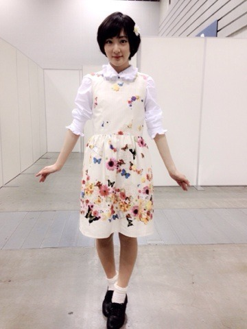
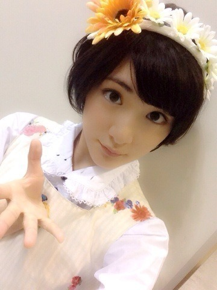
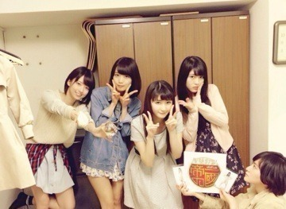

| 2014/05 07 Wed | 横浜個別握手会ヽ( ・∀・)ノ |
ブログ書くの遅くなりましたごめんなさい〜(；ω；)
５月5日のこどもの日は横浜個別握手会でしたヽ(・∀・)ノ
来てくださった皆さんありがとうございましたっヽ(・∀・)ノ
さっそくお洋服を！

髪飾りとワンピースはお母さんの手作りなんですっ！！
皆さんにいいねって言われて私もお母さんも嬉しいですありがとうございますっ！！
お母さんまたつくってちょうだいなっ

お留守番の皆さんに！
エアー握手会開催しますよっ！

はいっ。
握手〜ヽ(・∀・)ノ
この髪飾りもお母さんの手作りだよっ

じょーさんにお花畑を飛んでそうと言われたよっ。
今回はかなりガーリーでしたぬ。
私はガーリーもボーイッシュもいろんなお洋服を着こなせる人になりたい！

帝一の國見に行きました！
生駒の目ガチすぎる笑
キモい笑
さゆちゃん、ひなちまお疲れ様ですっ！
舞台観にいくの大好きなんです私。
しかもメンバー出てて、自分の好きな作品だからなお嬉しくて楽しかったですっ！
手拍子とかして楽しかった〜！！
お話も原作をそのまま、いや、それ以上に輝きを増していましてまぁ私のツボを押さえ、私の心をガッチリつかんで離しませんでしたヽ(・∀・)ノ
オタクモードになり。
パンフレット
ポラロイド （美美子、帝一、億人）
Tシャツ
お財布ちょうどお金下ろしてたから大丈夫だったけどすっからかんになりました笑
来年続きやるんだよワクワク(///￣(工)￣///)
最近は毎日動いていて、
あれかな。
五月病かかったのかなと思います笑
でもこんなに楽しい毎日は今しかないんだと
昨日お風呂入りながら思いました。
帝一の國見に行ったんだから頑張れ俺っ！
今日は空が綺麗だよ。
へばなっ！☆
コメント(551)
2014/05/07 10:12